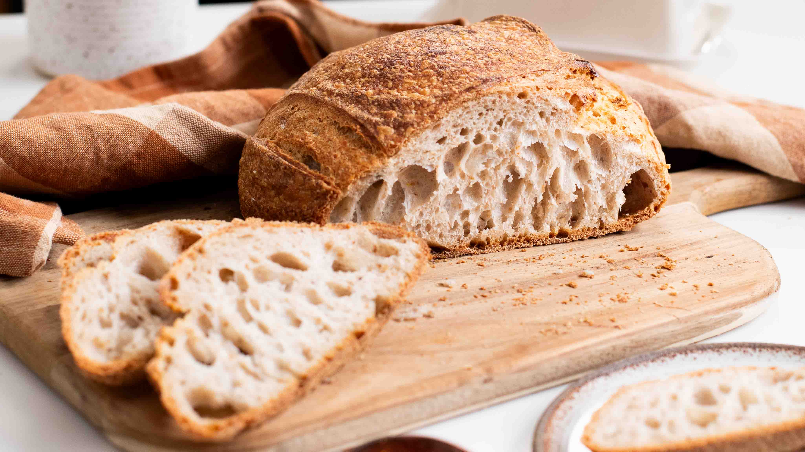
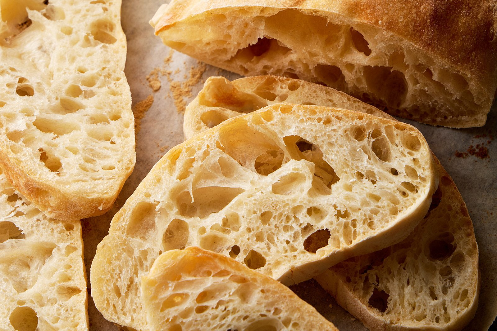

Our Artisan Breads
Made fresh daily with stone-ground flour
BEST SELLER

Sourdough
Traditional 48-hour fermented sourdough with a perfect crust and complex flavor
R45

French Baguette
Crispy, golden baguettes with a light, airy crumb - perfect for any meal
R25

Five-Grain
Hearty multi-grain bread packed with nutrients, seeds, and wholesome flavor
R50

Rye Bread
Dense, nutritious whole grain rye with caraway seeds and rich flavor
R40

Ciabatta
Italian-style bread with characteristic holes, olive oil, and chewy texture
R38

Potato Bread
Soft, moist bread made with real potatoes for exceptional texture
R35
Also Available:
Butter Croissants (R15) • Brioche • Soft-Butter Rolls • Chocolate Breadsticks